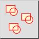
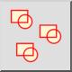
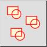
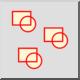

Выделить привязки блока
Панель инструментов / Иконка:
 

Меню: Блок > Выделить привязки блока
Горячая клавиша: B, +
Команды: blockselect | selectblock | b+
Это автоматический перевод.
Панель инструментов / Иконка:
 

Меню: Блок > Выделить привязки блока
Горячая клавиша: B, +
Команды: blockselect | selectblock | b+
This tool selects all block references of the block that is currently selected in the block list. Only block references which are part of the block that is currently being edited are selected.